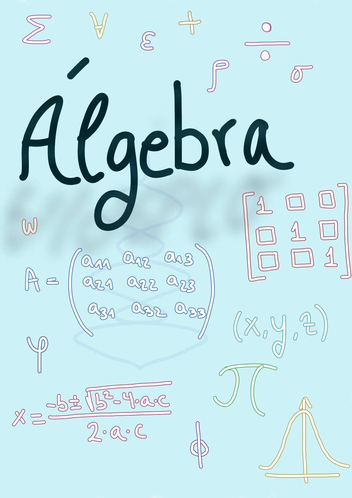

¡Bienvenido al Mundo del Álgebra Lineal!
¡Explora las maravillas del álgebra lineal y descubre cómo puede transformar tu manera de ver el mundo! En esta página, encontrarás todo lo que necesitas para dominar los conceptos de segundo de bachillerato en álgebra lineal (matrices y determinantes) de una manera clara y emocionante.
Álgebra lineal

¡Prepárate para sumergirte en un viaje lleno de matrices y determinantes! Ya sea que estés buscando resolver problemas de la vida real o explorar el fascinante mundo de la ciencia y la tecnología, el álgebra lineal te brinda las herramientas para desbloquear nuevas posibilidades y desafíos.
¡Comienza tu aventura matemática ahora y desata tu potencial con el poder del álgebra lineal!